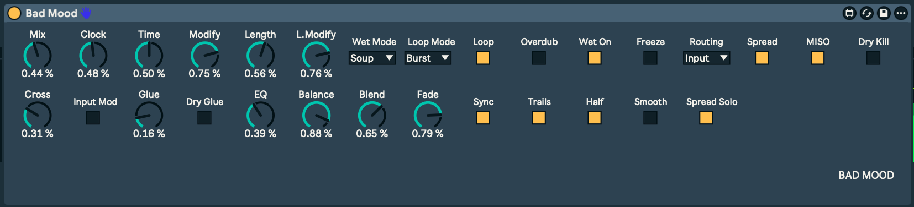
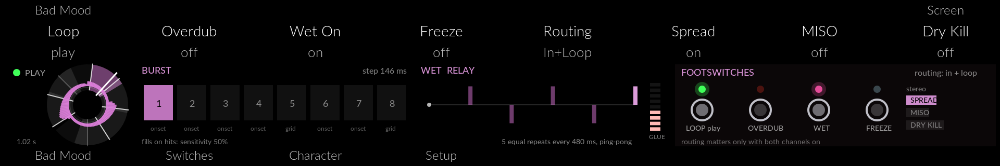

21
bad mood
Clocked micro-looper into a synthetic wet channel, after the Chase Bliss BAD MOOD — Burst/Radio/Mask loops, Soup/Relay/Flip, Cross and Glue.


about
A stereo audio effect that follows the pedal's signal flow: Micro-looper channel → Wet channel → Glue → Output. The looper is always listening; switch Loop on to play the last loop-length back as a step sequence (Burst), a five-station shortwave radio (Radio) or a threshold-masked loop (Mask). The wet channel is a modulated feedback reverb with shimmer (Soup), an equal-volume repeater with 1–8 repeats (Relay) or time-spread pitch harmonies (Flip). Clock sets the sample rate of both channels in harmonized steps. The whole DSP is one gen~ codebox, so the device has no dependencies. Four Push 3 banks mirror the front panel, the footswitches and dips, the character options and setup.
- type
- audio effect
- built by
- claude
- state
- awaiting test · v1.1 push screen
- version
- 1.1
- push screen
- Live 13 / Max 9.2
- folder
- Bad Mood Device
quick start
- 01Drop
Bad Mood.amxdon an audio track; map Loop, Overdub, Wet On and Freeze to pads. - 02Play a phrase, switch Loop on: the last 0.68 s (Clock at 0) plays back. Pick a Loop Mode.
- 03Set Wet Mode to Soup and raise Time; Modify pushes it synthetic/metallic.
- 04Turn Clock to change sample rate, loop length and pitch in harmonized steps.
controls
bad mood
- Mix0 - 100%
- Input vs BAD MOOD, both channels.
- Clock8 steps
- Sample rate: loop length/resolution and wet quality/time. Steps 1, 4/3, 3/2, 2, 3, 4, 6, 8 unless Smooth.
- Time0 - 100%
- Soup decay / Relay delay time / Flip lag between notes.
- Modify0 - 100%
- Soup character / Relay repeats (1-8) / Flip harmony (8 sets).
- Length0 - 100%
- Burst step speed / Radio per-station parameter / Mask character.
- L.Modify0 - 100%
- Burst sensitivity / Radio station scan / Mask threshold.
- Wet ModeSoup / Relay / Flip
- Synthetic reverb, abstract repeater, chordcaster.
- Loop ModeBurst / Radio / Mask
- Loop sequencer, shortwave looper, loop disguiser.
switches
- Looplisten / play
- Record (always listening) or play the micro-loop.
- Overduboff / on
- Layer clean input onto the playing loop.
- Wet Onoff / on
- Wet channel footswitch.
- Freezeoff / on
- Infinitely repeat the current sound.
- RoutingInput / In+Loop / Looper
- What feeds the wet channel when both are on.
- Spreadoff / on
- Stereo spread: different L/R modulation, ping-pong repeats, detuned harmonies, offset loop read.
- MISOoff / on
- Mono in, stereo out.
- Dry Killoff / on
- Remove the dry signal.
character
- Cross0 - 100%
- Pitch + loudness modulation from the other channel. Off by default.
- Input Modoff / on
- Cross source becomes the input.
- Glue0 - 100%
- End-of-chain saturator / destroyer — warming to bit-crushed above 50%.
- Dry Glueoff / on
- Glue on the dry signal too.
- EQ0 - 100%
- Tilt: cw removes lows, ccw removes highs, noon = no effect.
- Balance0 - 100%
- Looper vs wet loudness.
- Blend0 - 100%
- Clean loop when routed through the wet channel.
- Fade0 - 100%
- Old layers fade while overdubbing.
setup
- Syncoff / on
- Wet times lock to loop-length divisions (÷1–8 set by Time).
- Trailsoff / on
- Wet tails continue after Wet On goes off.
- Halfoff / on
- Loop length halved.
- Smoothoff / on
- Continuous Clock.
- Spread Solooff / on
- Spread on the wet channel only.
push 3
encoders read left to right. slots marked “–” are intentionally empty.
Screen is the last button above the display (slot 8) in every bank: it switches between the device's own picture and Push's normal view.
workflow
the radio dial
In Radio mode, L.Modify scans five stations with filtered static between them: Tape (Length = speed and direction, ccw reverses), Ambient (slowdown, pitch kept), Orchestral (octave and fifth voices drift in and out), Shoegaze (frozen grains) and Dance (normal → half → double speed).
gotchas
- Soup is a modulated feedback network with shimmer, not a true spectral resynthesis (no FFT in gen~); high Modify shortens its tail a little.
- The loop is the last 0.68 s × Clock ratio (at 48 kHz) of what the looper heard — there is no separate record button.
- Loop, Overdub, Wet On and Freeze are toggles, not momentary switches: map them to pads.
push 3 screen
what it shows
Loop, loop mode, wet, glue. The micro-loop is wrapped into a ring with the real read heads; while listening it fills from what you play. Burst shows the eight steps as wedges starting where your onsets were caught, the playing step lit and a flash on each fill. Radio is a shortwave dial with the five stations, static filling the gaps from the real tuning amount. Mask marks the loud parts of the loop that get masked. The wet box draws Soup as four delay lines churning, Relay as its equal repeats (ping-pong with Spread) and Flip as the harmony voices on a stave. The output meter gets redder and coarser with Glue. Everything is coloured by the bad mood ring: a sulky violet at full clock rate, bruising through crimson to a furious near-black red as the clock drops, and the stone cracks. The right panel follows the bank (Bad Mood, Switches, Character, Setup).
short loops
The loop picture is drawn from level readings 30 times a second, so very short loops show as a flat band.
the screen button
Screen is the last button above the display, in every bank. It switches between this picture and Push's normal view. Push still draws the encoder names and values on top of the picture, so turning an encoder works exactly as before.
what it needs
Live 13 with Max 9.2 or later, and Push 3. Custom Push graphics are a Live 13 beta feature, so Ableton may still change how they work. The picture is drawn only while this device is the one showing on Push.
not yet tried on push
Built and checked in the offline Push Screen Kit simulator on 23 Nov 2026 (the picture above is its render); not yet run in Live or on Push. The old version is kept beside the new one.
rebuilding
python3 "Bad Mood source/build_badmood_v11.py" builds v1.1 from Bad Mood v1.0.amxd with Push Screen Kit/pushscreen_genfx.py. The gen~ code only gains report outlets for the screen, so the sound is unchanged.
python3 build.py in Bad Mood Device/Bad Mood source/ regenerates the .amxd from dsp.genexpr; python3 proto.py runs the Python prototype checks.